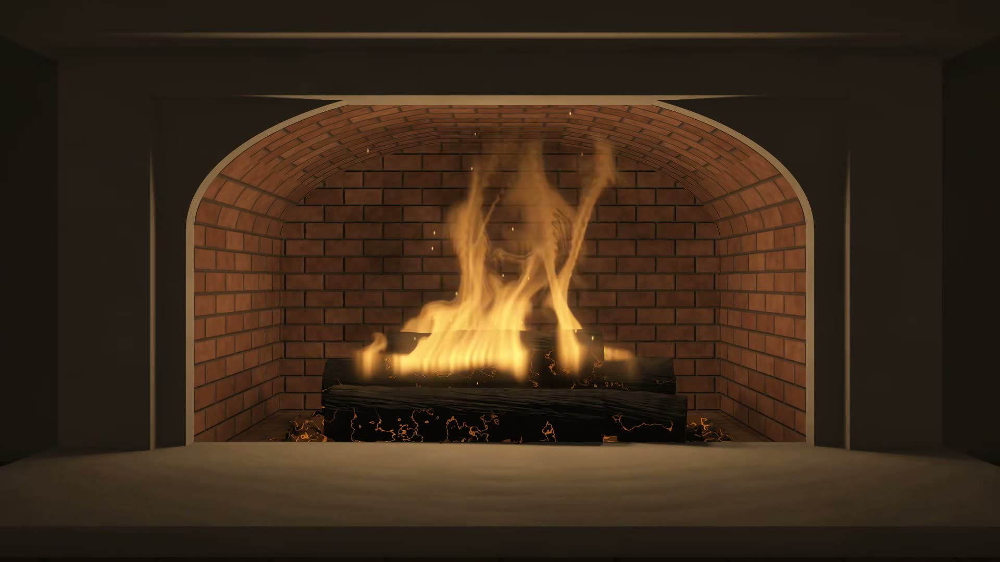

Gemütliches Kaminfeuer für dein Apple TV
Fünf gezeichnete Feuer, jedes mit seinem eigenen Klang. Diese App gibt es nur für Apple TV.
Fünf Feuer
Holzscheite in einem Backsteinkamin, glimmende Glut, ein Lagerfeuer bei Nacht, ein Holzofen und eine Reihe von Gasbrennern.
Nur das Feuer auf deinem Bildschirm
Keine Werbung, nichts verdeckt das Bild. Das Feuer füllt den ganzen Breitbildschirm in hoher Auflösung.
Nahtlose Schleifen
Jede Szene ist eine 60-Sekunden-Schleife, du siehst also nie einen Sprung.
Sleep-Timer
15, 30, 60 oder 90 Minuten. Danach werden Bild und Ton sanft ausgeblendet.
Deine Musik läuft weiter
Starte deine eigene Musik und lass das Feuer dazu brennen.
Läuft ohne Internet
Jede Szene und jeder Klang steckt in der App. Eine Uhr erscheint nur, wenn du sie einschaltest.